Informe Técnico de Avance Núm. 7
library(reticulate)
use_condaenv("r-reticulate")import pandas as pd
import numpy as np
import matplotlib.pyplot as plt
import seaborn as snsdf = pd.read_pickle('ITA_7.pkl')
df.info()## <class 'pandas.core.frame.DataFrame'>
## Int64Index: 294 entries, 0 to 564
## Data columns (total 37 columns):
## # Column Non-Null Count Dtype
## --- ------ -------------- -----
## 0 id 294 non-null int64
## 1 fecha_ingreso 294 non-null datetime64[ns]
## 2 ita 294 non-null int64
## 3 edad 286 non-null float64
## 4 ciudad 290 non-null object
## 5 hta 287 non-null object
## 6 dm 288 non-null object
## 7 tumor 288 non-null object
## 8 tumor_tipo 3 non-null object
## 9 hp 288 non-null object
## 10 tumor_fam 288 non-null object
## 11 tumor_fam_tipo 39 non-null object
## 12 peso 238 non-null float64
## 13 estatura 238 non-null float64
## 14 tabaco 289 non-null object
## 15 tabaco_cantidad 265 non-null float64
## 16 carne 290 non-null object
## 17 carne_frec 261 non-null float64
## 18 verdura 290 non-null object
## 19 verdura_frec 258 non-null float64
## 20 ejercicio 289 non-null object
## 21 ejercicio_frec 263 non-null float64
## 22 miccion_inicio 290 non-null object
## 23 miccion_lenta 290 non-null object
## 24 miccion_frec 290 non-null object
## 25 nicturia 290 non-null object
## 26 hematuria 290 non-null object
## 27 dolor_oseo 290 non-null object
## 28 psa_valor 294 non-null float64
## 29 psa_limite 294 non-null float64
## 30 psa_categoria 294 non-null object
## 31 psa_indicacion 294 non-null object
## 32 bx 294 non-null object
## 33 bx_fecha 7 non-null datetime64[ns]
## 34 bx_dx 7 non-null object
## 35 bx_categoria 7 non-null object
## 36 bx_indicacion 7 non-null object
## dtypes: datetime64[ns](2), float64(9), int64(2), object(24)
## memory usage: 87.3+ KBDatos personales
Edad
df['edad'].describe().round()## count 286.0
## mean 59.0
## std 13.0
## min 36.0
## 25% 49.0
## 50% 57.0
## 75% 67.0
## max 95.0
## Name: edad, dtype: float64sns.histplot(x='edad', data=df)
plt.xlabel('Edad, en años')
plt.ylabel('Núm. pacientes')
plt.show()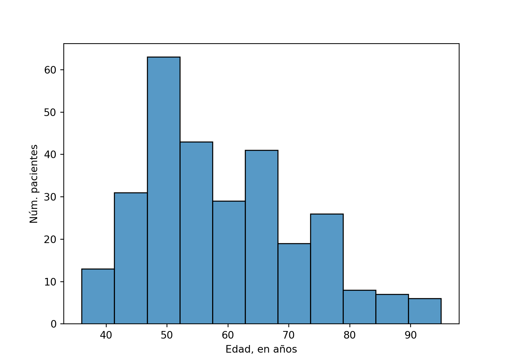
Procedencia
Las 10 ciudades de procedencia más frecuentes
df['ciudad'].value_counts().head(10)## Asunción 94
## Luque 41
## Capiatá 18
## San Lorenzo 18
## Lambaré 17
## Ferndo de la Mora 14
## Villa Elisa 13
## Mariano Roque Alonso 12
## Itá 10
## Ñemby 7
## Name: ciudad, dtype: int64Datos antropométricos
Peso, en Kg
df['peso'].describe().round()## count 238.0
## mean 87.0
## std 16.0
## min 50.0
## 25% 78.0
## 50% 85.0
## 75% 97.0
## max 143.0
## Name: peso, dtype: float64sns.histplot(x='peso', data=df, edgecolor='black')
plt.xlabel('Peso corporal, en Kg')
plt.ylabel('Núm. pacientes')
plt.show()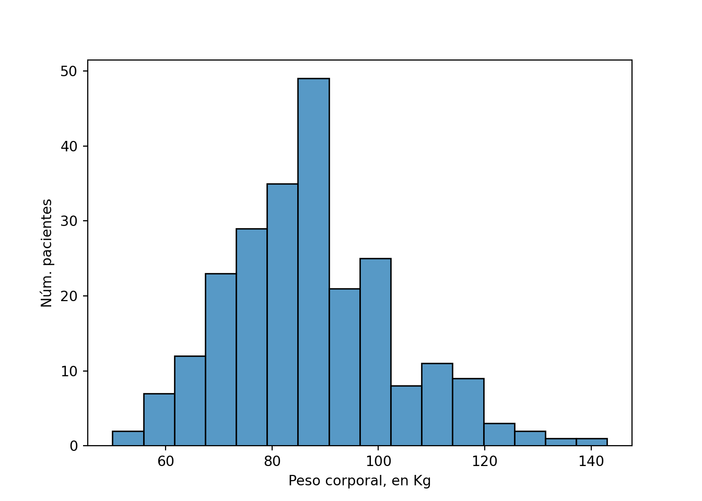
Talla, en cm
df['estatura'].describe().round()## count 238.0
## mean 172.0
## std 7.0
## min 150.0
## 25% 168.0
## 50% 172.0
## 75% 178.0
## max 198.0
## Name: estatura, dtype: float64sns.histplot(x='estatura', data=df, edgecolor='black')
plt.xlabel('Talla corporal, en cm')
plt.ylabel('Núm. pacientes')
plt.show()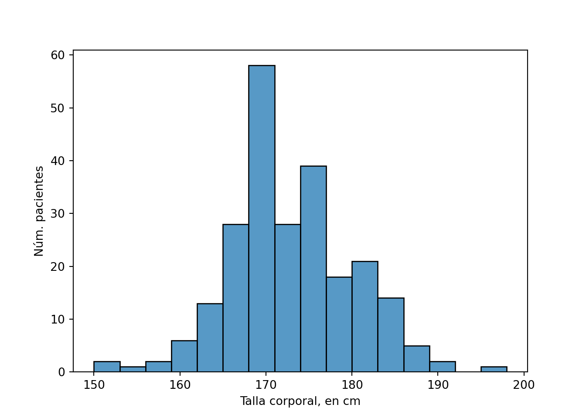
Índice de masa corporal
df['imc'] = df['peso']/(df['estatura']/100)**2
df['imc'].describe().round()## count 236.0
## mean 29.0
## std 4.0
## min 19.0
## 25% 26.0
## 50% 29.0
## 75% 32.0
## max 43.0
## Name: imc, dtype: float64sns.histplot(x='imc', data=df, edgecolor='black')
plt.xlabel('Índice de masa corporal')
plt.ylabel('Núm. pacientes')
plt.show()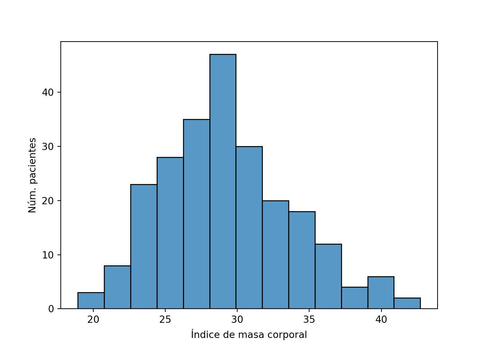
Antecedentes patológicos
Hipertensión arterial
var = 'hta'
df[var].value_counts()## No 179
## Sí 108
## Name: hta, dtype: int64df[var].value_counts(normalize=True).round(2)## No 0.62
## Sí 0.38
## Name: hta, dtype: float64sns.countplot(x=var, data=df, edgecolor='black')
plt.xlabel('Hipertensión arterial')
plt.ylabel('Núm. pacientes')
plt.show()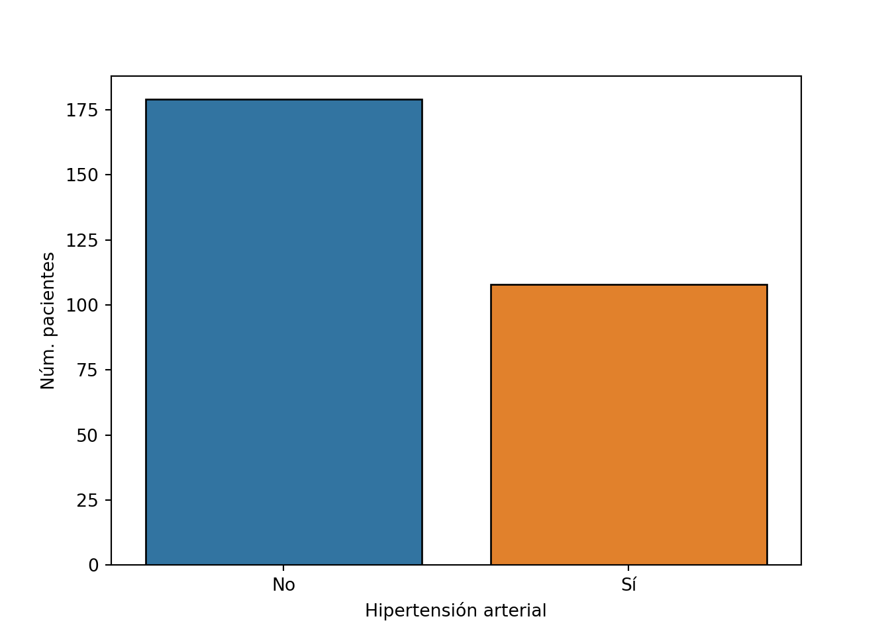
Diabetes mellitus
var = 'dm'
df[var].value_counts()## No 257
## Sí 31
## Name: dm, dtype: int64df[var].value_counts(normalize=True).round(2)## No 0.89
## Sí 0.11
## Name: dm, dtype: float64sns.countplot(x=var, data=df, edgecolor='black')
plt.xlabel('Diabetes mellitus')
plt.ylabel('Núm. pacientes')
plt.show()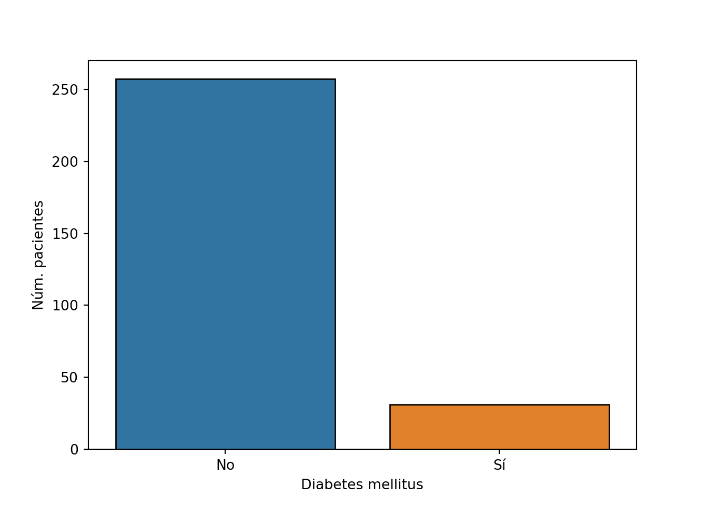
Tumor no prostático
Hipertensión arterial
var = 'tumor'
df[var].value_counts()## No 283
## Sí 5
## Name: tumor, dtype: int64df[var].value_counts(normalize=True).round(2)## No 0.98
## Sí 0.02
## Name: tumor, dtype: float64sns.countplot(x=var, data=df, edgecolor='black')
plt.xlabel('Antecedente de tumor no prostático')
plt.ylabel('Núm. pacientes')
plt.show()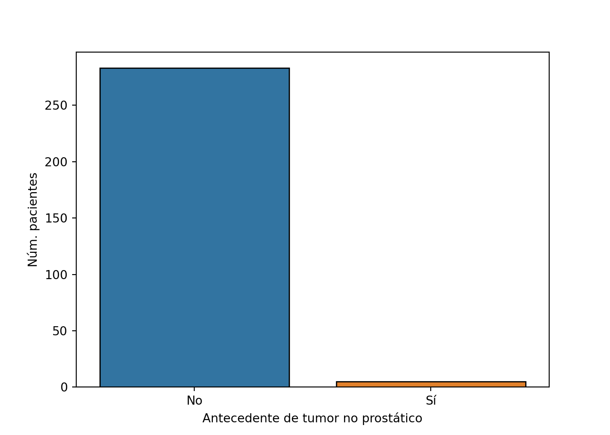
Tipo de tumor no prostático
df['tumor_tipo'].value_counts()## Mieloma múltiple 1
## Pólipos colónicos 1
## Tiroides 1
## Name: tumor_tipo, dtype: int64Hiperplasia prostática
var = 'hp'
df[var].value_counts()## No 264
## Sí 24
## Name: hp, dtype: int64df[var].value_counts(normalize=True).round(2)## No 0.92
## Sí 0.08
## Name: hp, dtype: float64sns.countplot(x=var, data=df, edgecolor='black')
plt.xlabel('Antecedente de hiperplasia prostática')
plt.ylabel('Núm. pacientes')
plt.show()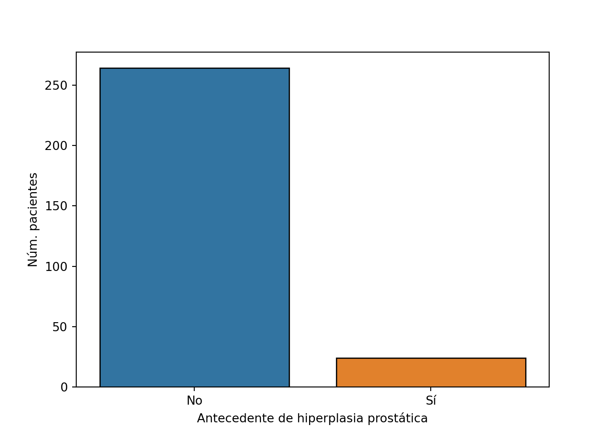
Cáncer de próstata familiar
var = 'tumor_fam'
df[var].value_counts()## No 247
## Sí 41
## Name: tumor_fam, dtype: int64df[var].value_counts(normalize=True).round(2)## No 0.86
## Sí 0.14
## Name: tumor_fam, dtype: float64sns.countplot(x=var, data=df, edgecolor='black')
plt.xlabel('Antecedente de cáncer de próstata en la familia')
plt.ylabel('Núm. pacientes')
plt.show()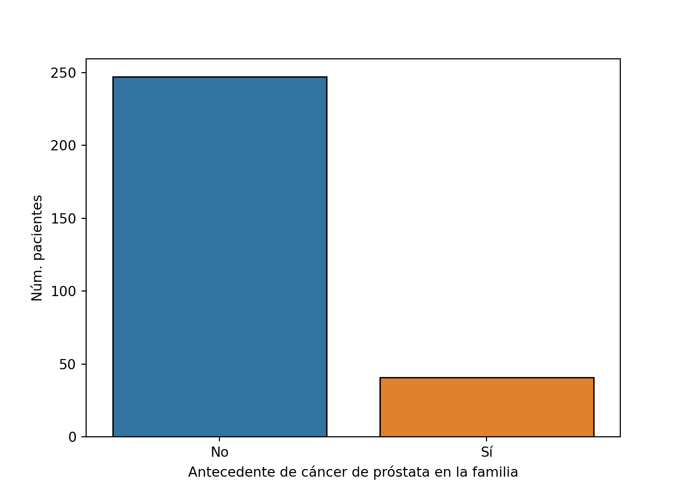
Familiar con cáncer de próstata
var = 'tumor_fam_tipo'
df[var].value_counts()## Padre 27
## Tío 4
## Hermano 3
## Abuelo 3
## Primo 1
## Tío abuelo 1
## Name: tumor_fam_tipo, dtype: int64df[var].value_counts(normalize=True).round(2)## Padre 0.69
## Tío 0.10
## Hermano 0.08
## Abuelo 0.08
## Primo 0.03
## Tío abuelo 0.03
## Name: tumor_fam_tipo, dtype: float64sns.countplot(x=var, data=df, edgecolor='black')
plt.xlabel('Familiar con cáncer de próstata')
plt.ylabel('Núm. pacientes')
plt.show()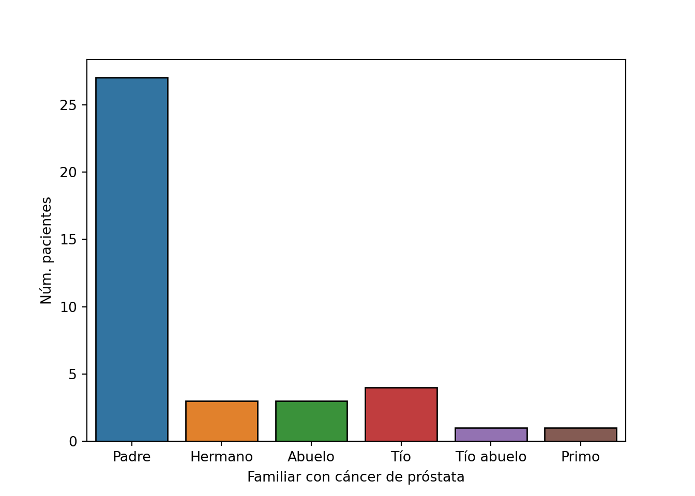
Hábitos personales
Consumo de tabaco
var = 'tabaco'
df[var].value_counts()## No 234
## Sí 55
## Name: tabaco, dtype: int64df[var].value_counts(normalize=True).round(2)## No 0.81
## Sí 0.19
## Name: tabaco, dtype: float64sns.countplot(x=var, data=df, edgecolor='black')
plt.xlabel('Consumo de tabaco (cigarrillos)')
plt.ylabel('Núm. pacientes')
plt.show()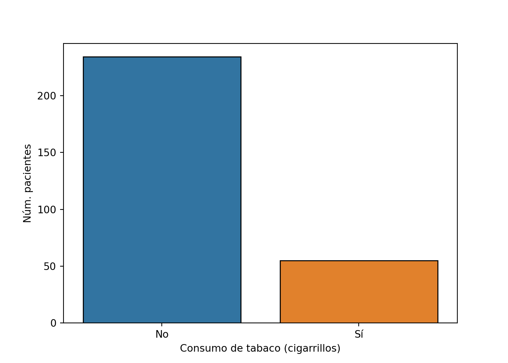
var = 'tabaco_cantidad'
df[var].describe().round()## count 265.0
## mean 2.0
## std 5.0
## min 0.0
## 25% 0.0
## 50% 0.0
## 75% 0.0
## max 40.0
## Name: tabaco_cantidad, dtype: float64sns.histplot(x=var, data=df)
plt.xlabel('Cantidad de cigarrillos/semana')
plt.ylabel('Núm. pacientes')
plt.show()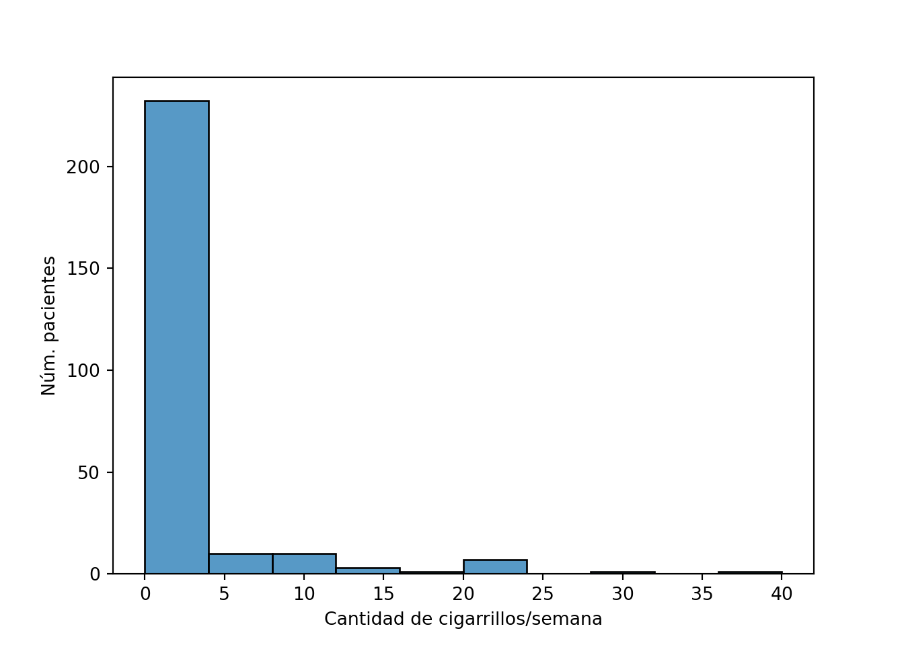
Consumo de carne
var = 'carne'
df[var].value_counts()## Sí 282
## No 8
## Name: carne, dtype: int64df[var].value_counts(normalize=True).round(2)## Sí 0.97
## No 0.03
## Name: carne, dtype: float64sns.countplot(x=var, data=df, edgecolor='black')
plt.xlabel('Consumo de carne')
plt.ylabel('Núm. pacientes')
plt.show()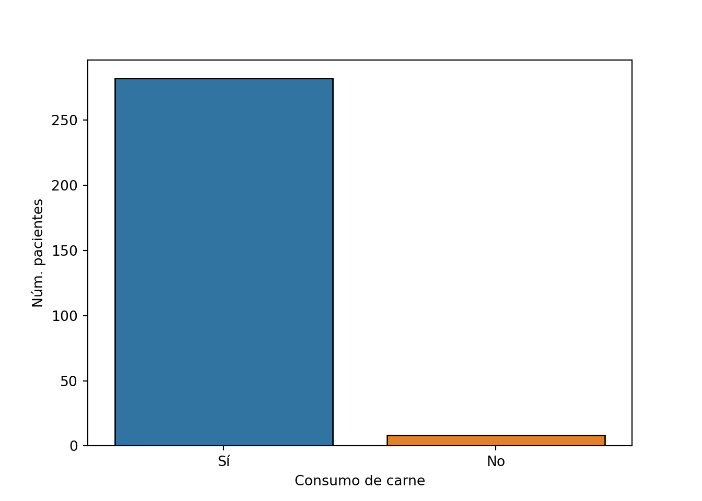
var = 'carne_frec'
df[var].describe().round()## count 261.0
## mean 4.0
## std 2.0
## min 0.0
## 25% 2.0
## 50% 3.0
## 75% 5.0
## max 7.0
## Name: carne_frec, dtype: float64sns.histplot(x=var, data=df)
plt.xlabel('Consumo de carne/semana')
plt.ylabel('Núm. pacientes')
plt.show()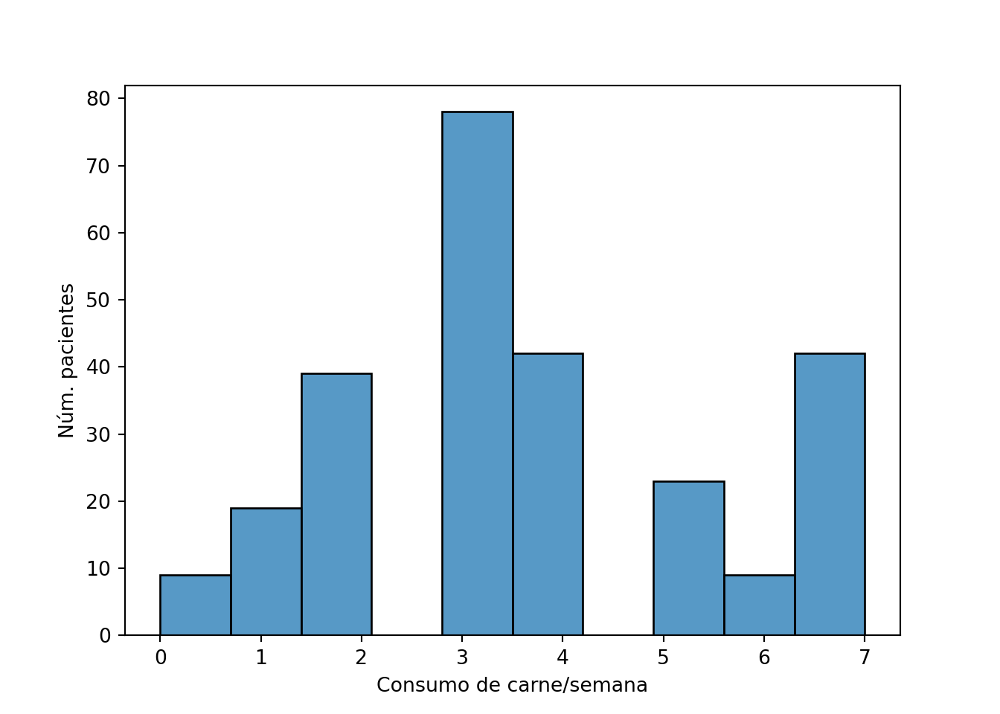
Consumo de frutas/verduras
var = 'verdura'
df[var].value_counts()## Sí 282
## No 8
## Name: verdura, dtype: int64df[var].value_counts(normalize=True).round(2)## Sí 0.97
## No 0.03
## Name: verdura, dtype: float64sns.countplot(x=var, data=df, edgecolor='black')
plt.xlabel('Consumo de frutas y verduras')
plt.ylabel('Núm. pacientes')
plt.show()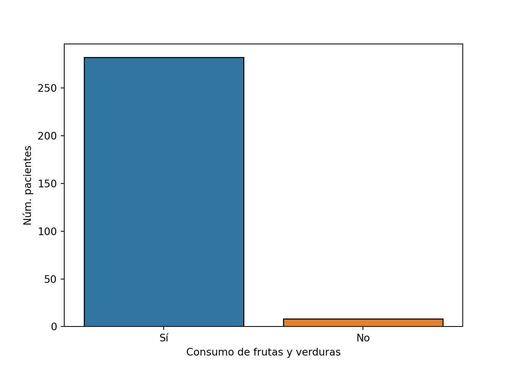
var = 'verdura_frec'
df[var].describe().round()## count 258.0
## mean 5.0
## std 2.0
## min 0.0
## 25% 3.0
## 50% 5.0
## 75% 7.0
## max 7.0
## Name: verdura_frec, dtype: float64sns.histplot(x=var, data=df)
plt.xlabel('Consumo de frutas y verduras/semana')
plt.ylabel('Núm. pacientes')
plt.show()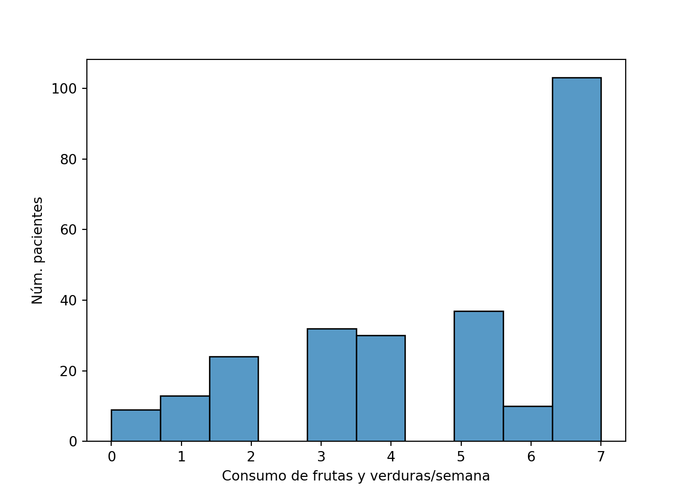
Actividad física
var = 'ejercicio'
df[var].value_counts()## No 148
## Sí 141
## Name: ejercicio, dtype: int64df[var].value_counts(normalize=True).round(2)## No 0.51
## Sí 0.49
## Name: ejercicio, dtype: float64sns.countplot(x=var, data=df, edgecolor='black')
plt.xlabel('Realización de ejercicios físicos')
plt.ylabel('Núm. pacientes')
plt.show()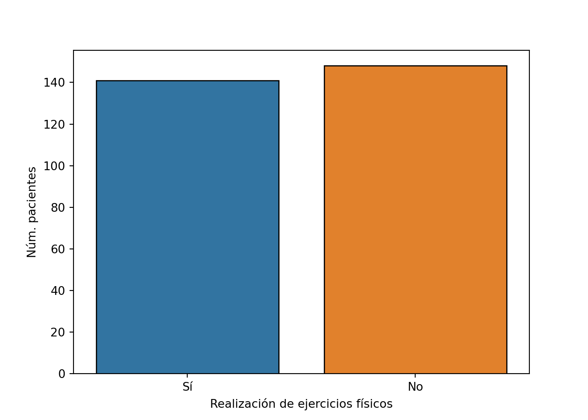
var = 'ejercicio_frec'
df[var].describe().round()## count 263.0
## mean 2.0
## std 2.0
## min 0.0
## 25% 0.0
## 50% 0.0
## 75% 3.0
## max 7.0
## Name: ejercicio_frec, dtype: float64sns.histplot(x=var, data=df)
plt.xlabel('Realización de ejercicios físicos/semana')
plt.ylabel('Núm. pacientes')
plt.show()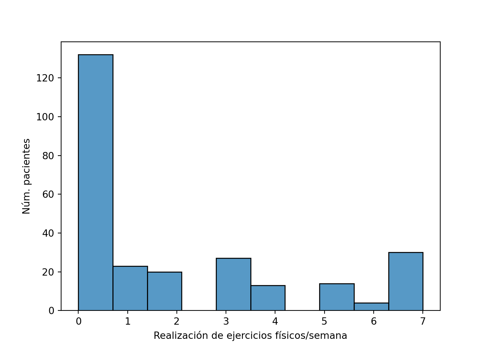
Síntomas urinarios
Dificultad para empezar a orinar
var = 'miccion_inicio'
df[var].value_counts()## No 246
## Sí 44
## Name: miccion_inicio, dtype: int64df[var].value_counts(normalize=True).round(2)## No 0.85
## Sí 0.15
## Name: miccion_inicio, dtype: float64sns.countplot(x=var, data=df, edgecolor='black')
plt.xlabel('Dificultad para iniciar la micción')
plt.ylabel('Núm. pacientes')
plt.show()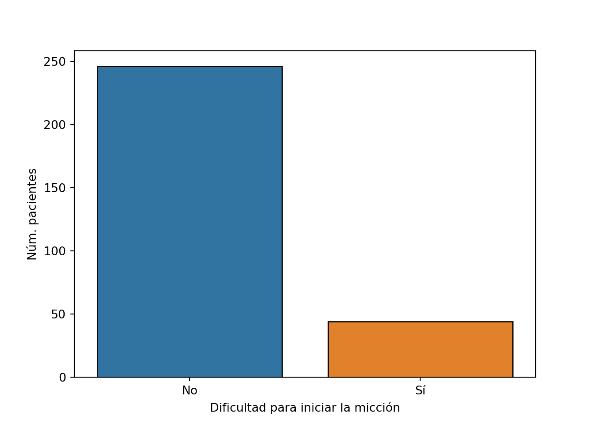
Chorro de orina lento o débil
var = 'miccion_lenta'
df[var].value_counts()## No 242
## Sí 48
## Name: miccion_lenta, dtype: int64df[var].value_counts(normalize=True).round(2)## No 0.83
## Sí 0.17
## Name: miccion_lenta, dtype: float64sns.countplot(x=var, data=df, edgecolor='black')
plt.xlabel('Chorro de orina lento o débil')
plt.ylabel('Núm. pacientes')
plt.show()
Orinar frecuentemente (>10 veces/día)
var = 'miccion_frec'
df[var].value_counts()## No 228
## Sí 62
## Name: miccion_frec, dtype: int64df[var].value_counts(normalize=True).round(2)## No 0.79
## Sí 0.21
## Name: miccion_frec, dtype: float64sns.countplot(x=var, data=df, edgecolor='black')
plt.xlabel('Orinar frecuentemente (>10 veces/día)')
plt.ylabel('Núm. pacientes')
plt.show()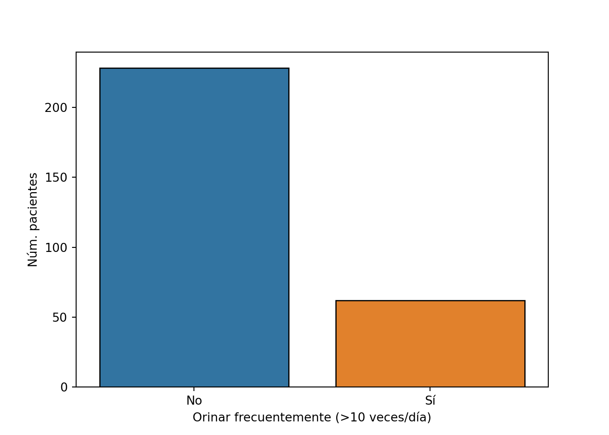
Nicturia
var = 'nicturia'
df[var].value_counts()## No 202
## Sí 88
## Name: nicturia, dtype: int64df[var].value_counts(normalize=True).round(2)## No 0.7
## Sí 0.3
## Name: nicturia, dtype: float64sns.countplot(x=var, data=df, edgecolor='black')
plt.xlabel('Nicturia')
plt.ylabel('Núm. pacientes')
plt.show()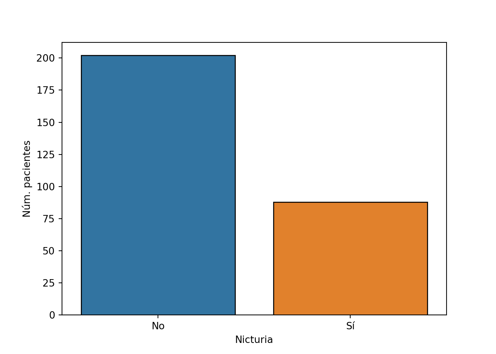
Hematuria
var = 'hematuria'
df[var].value_counts()## No 289
## Sí 1
## Name: hematuria, dtype: int64df[var].value_counts(normalize=True).round(2)## No 1.0
## Sí 0.0
## Name: hematuria, dtype: float64sns.countplot(x=var, data=df, edgecolor='black')
plt.xlabel('Hematuria')
plt.ylabel('Núm. pacientes')
plt.show()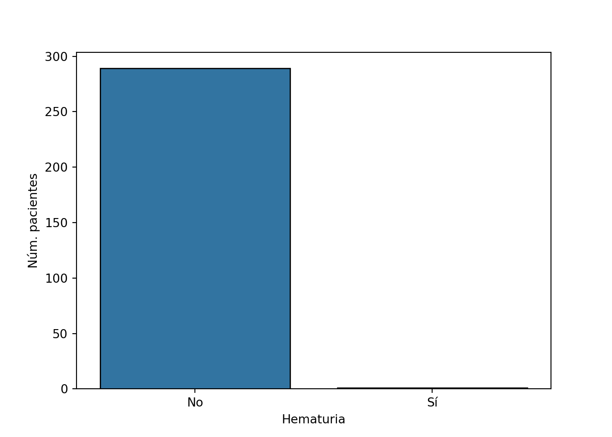
Dolor lumbar bajo
var = 'dolor_oseo'
df[var].value_counts()## No 232
## Sí 58
## Name: dolor_oseo, dtype: int64df[var].value_counts(normalize=True).round(2)## No 0.8
## Sí 0.2
## Name: dolor_oseo, dtype: float64sns.countplot(x=var, data=df, edgecolor='black')
plt.xlabel('Dolor en la región lumbar baja')
plt.ylabel('Núm. pacientes')
plt.show()Antígeno prostático específico
Valor sérico, en mg/dL
var = 'psa_valor'
df[var].describe().round(2)## count 294.00
## mean 2.30
## std 3.41
## min 0.22
## 25% 0.87
## 50% 1.31
## 75% 2.20
## max 27.07
## Name: psa_valor, dtype: float64sns.histplot(x=var, data=df, binwidth=0.5)
plt.xlabel('PSA sérico, en mg/dL')
plt.ylabel('Núm. pacientes')
plt.show()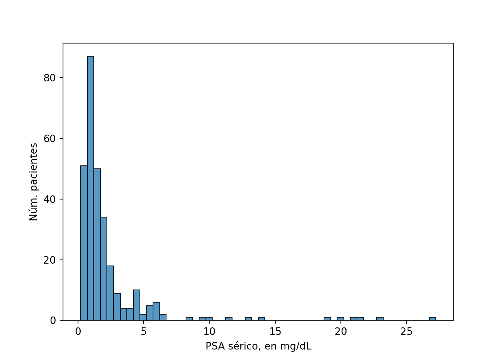
Categoría diagnóstica
var = 'psa_categoria'
df[var].value_counts()## En rango normal 267
## Ligeramente elevado 17
## Marcadamente elevado 10
## Name: psa_categoria, dtype: int64df[var].value_counts(normalize=True).round(2)## En rango normal 0.91
## Ligeramente elevado 0.06
## Marcadamente elevado 0.03
## Name: psa_categoria, dtype: float64sns.countplot(x=var, data=df, edgecolor='black', order=df['psa_categoria'].value_counts(sort=False).index)
plt.xlabel('Categoría diagnóstica de PSA')
plt.ylabel('Núm. pacientes')
plt.show()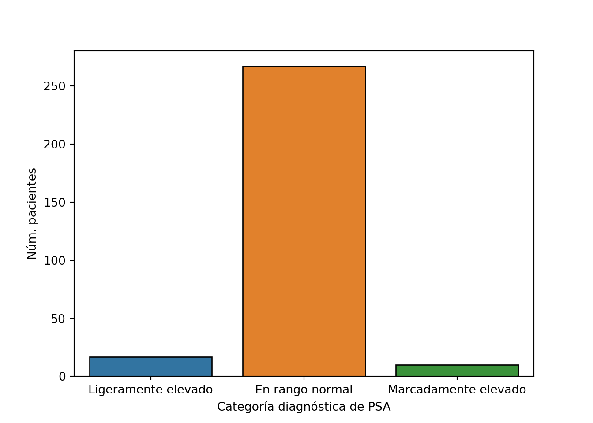
Biopsia prostática
Biopsias realizadas
var = 'bx'
df[var].value_counts()## No 287
## Sí 7
## Name: bx, dtype: int64df[var].value_counts(normalize=True).round(2)## No 0.98
## Sí 0.02
## Name: bx, dtype: float64sns.countplot(x=var, data=df, edgecolor='black')
plt.xlabel('Biopsia prostática realizada')
plt.ylabel('Núm. pacientes')
plt.show()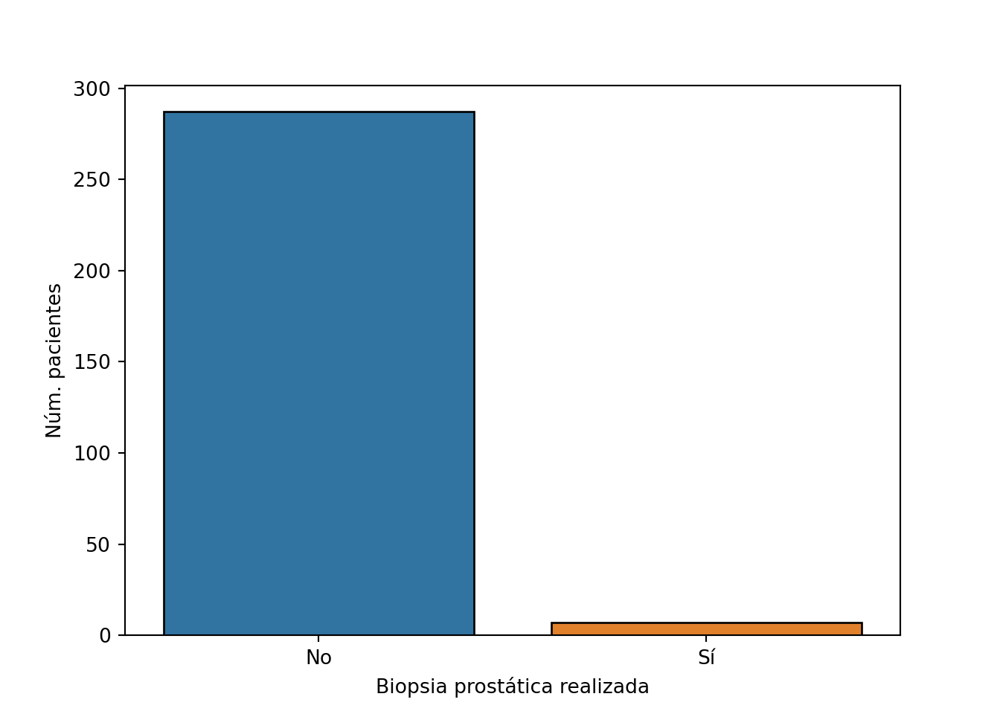
Diagnóstico de las biopsias
df['bx_categoria'].replace({'Proceso inflamatorio/hiperplásico':'Inflamatorio/hiperplásico','Proceso neoplásico maligno':'Neoplásico maligno','Proceso preneoplásico':'Preneoplásico'}, inplace=True)
df['bx_categoria'] = df['bx_categoria'].astype('category')
df['bx_categoria'].cat.reorder_categories(['Inflamatorio/hiperplásico','Preneoplásico','Neoplásico maligno'], inplace=True)
var = 'bx_categoria'
df[var].value_counts(sort=False)## Inflamatorio/hiperplásico 4
## Preneoplásico 1
## Neoplásico maligno 2
## Name: bx_categoria, dtype: int64df[var].value_counts(sort=False, normalize=True).round(2)## Inflamatorio/hiperplásico 0.57
## Preneoplásico 0.14
## Neoplásico maligno 0.29
## Name: bx_categoria, dtype: float64sns.countplot(x=var, data=df, edgecolor='black')
plt.xlabel('Diagnóstico de las biopsias')
plt.ylabel('Núm. pacientes')
plt.show()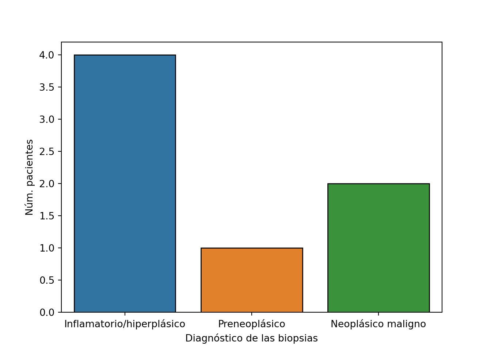